ggtiger offers a setup for ggplot2 that follows the Princeton University brand guidelines, where possible. As some fonts must be sourced from the Office of Communications, this will search for them locally first. If none are available, it uses secondary fonts from the brand guidelines and downloads them from Google Fonts if necessary. It contains several color palettes, as designed for “infographics” by the Office of Communications.
Installation
You can install the development version of ggtiger from GitHub with:
# install.packages("pak")
pak::pak("christopherkenny/ggtiger")Example
This is a package attempts to capture the Princeton University brand guidelines for making plots in ggplot2.
library(ggtiger)
library(ggplot2)
mpg |>
ggplot() +
geom_density(aes(x = cty, fill = factor(cyl)), alpha = 0.8) +
labs(
title = 'Density plot',
subtitle = 'City Mileage Grouped by Number of cylinders',
caption = 'Source: mpg',
x = 'City Mileage',
fill = '# Cylinders'
) +
facet_wrap(~ (hwy > 29)) +
scale_fill_princeton_d() +
theme_princeton()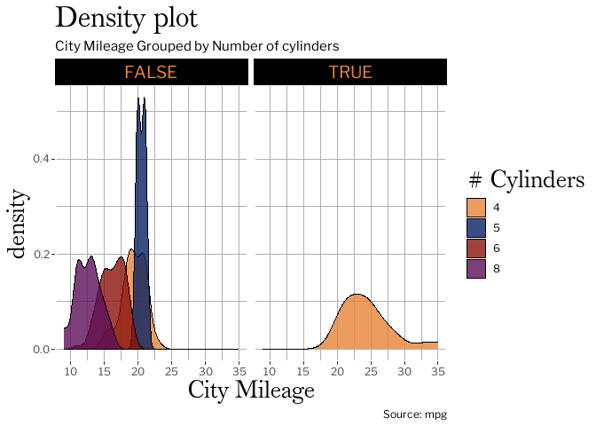
All color schemes are included in princeton, which is a list of palette vectors.

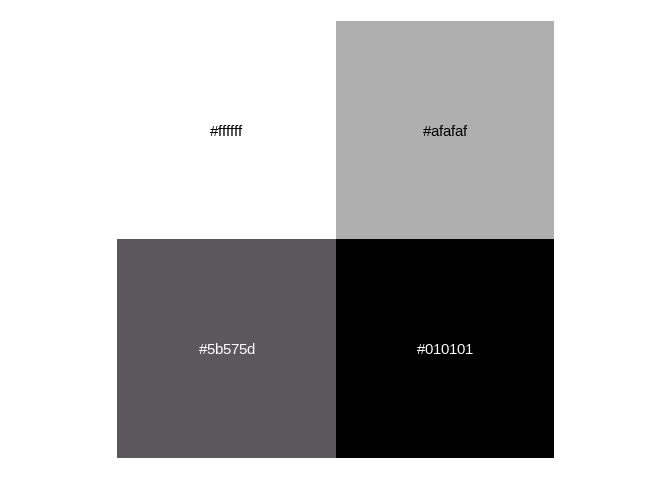
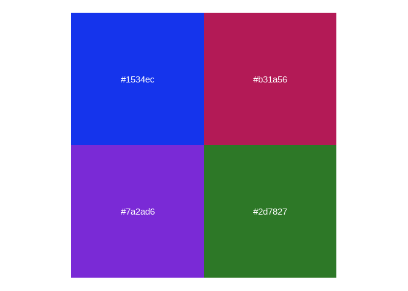
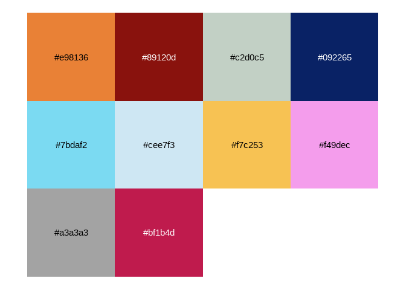
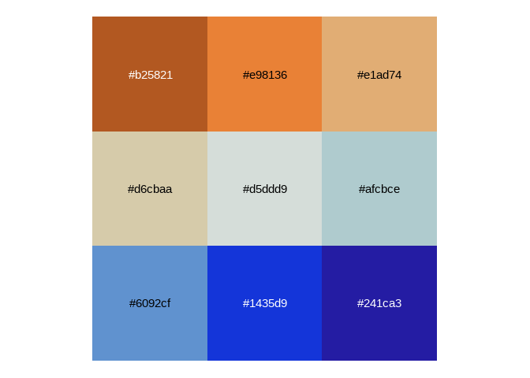
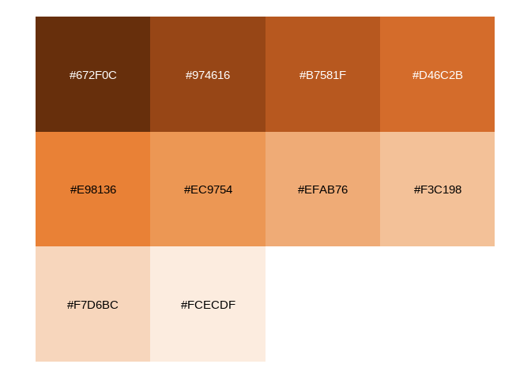
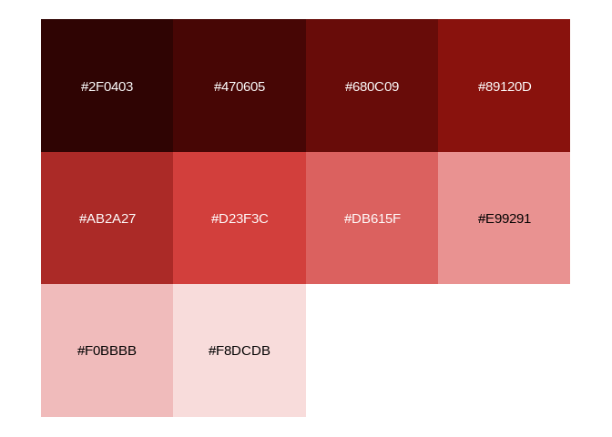
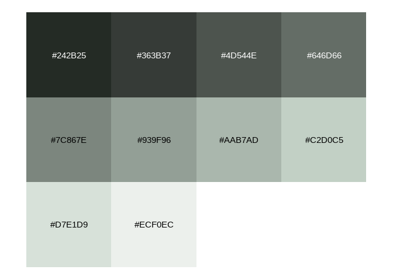
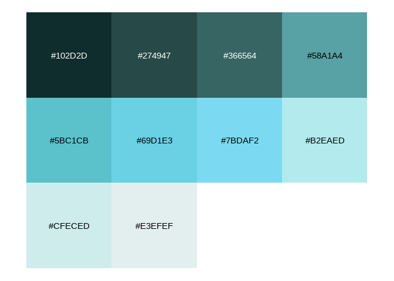
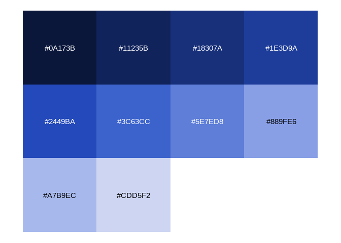
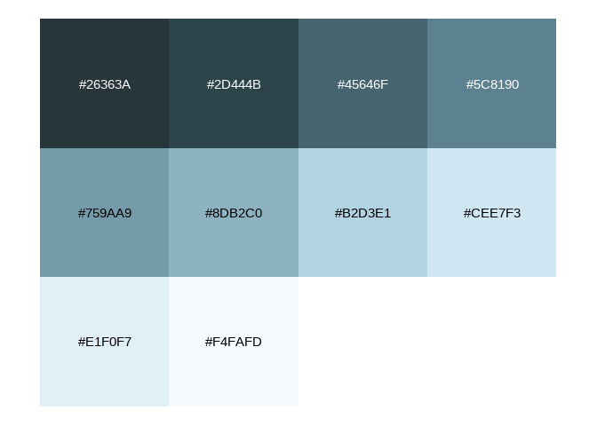
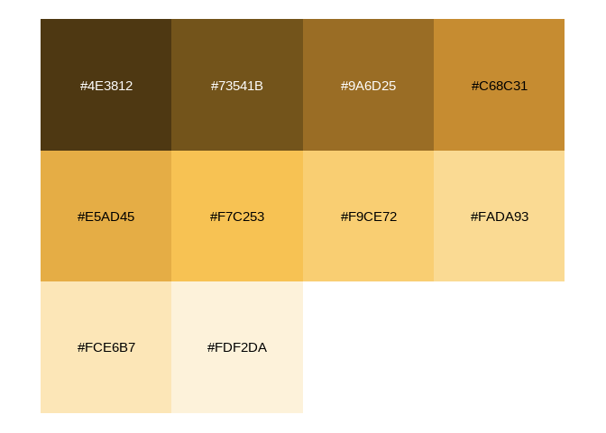
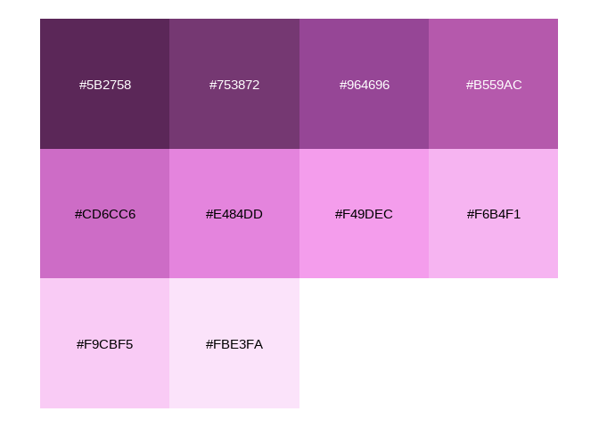
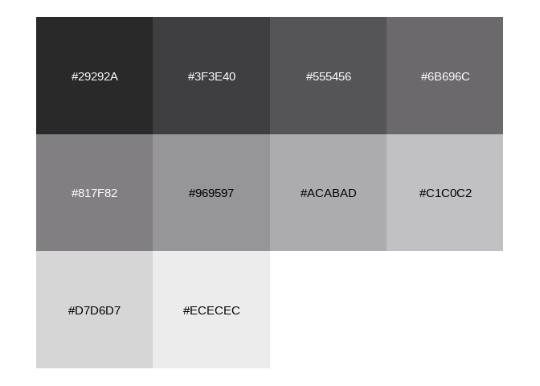
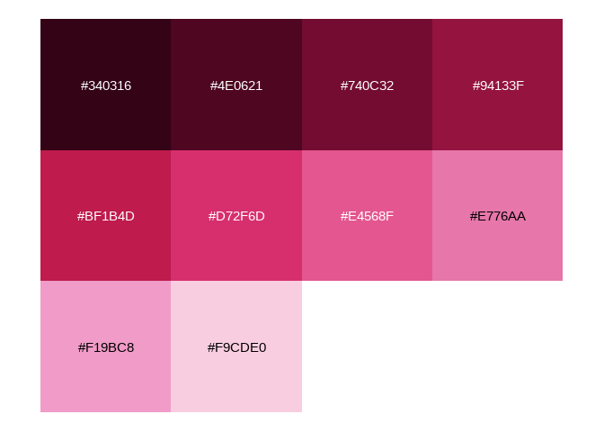